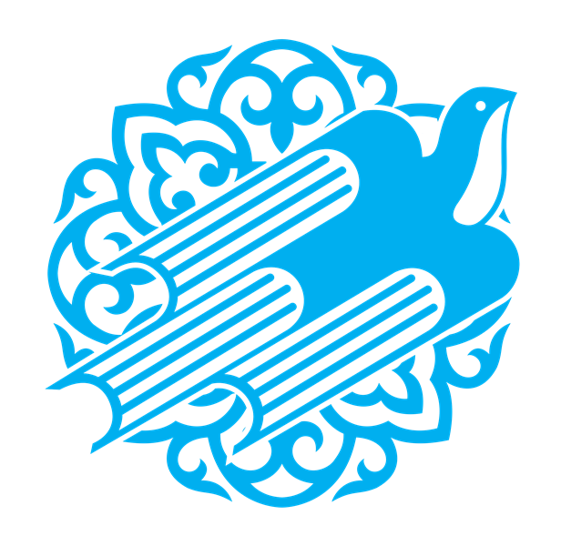
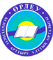

Taraz Bilim-Innovation Lyceum
"The preschool and basic education should generate a starting
intellectual potential and a good health of young Kazakhstans
citizens. They should be distinguished by an inquisitive mind,
boundless curiosity and vital energy."
"BILIM-INNOVATION"
“BILIM-INNOVATION” (former “KATEV”) is an International educational fund which was created in order to promote cooperation in the field of education between Kazakhstan and Turkey by direct support of presidents Nursultan Nazarbayev and Turgut Ozal.
“BILIM-INNOVATION” consists of 27 public lyceums, 3 private lyceums, 2 international shcools (“SPECTRUM” in Astana and “GALAXY INTERNATIONAL” in Almaty), 2 colleges in Almaty and Taraz as well as 3 Memorandum based schools in Atyrau, Kulsary and Ekibastuz.
Educational institutions earlier recognized as “Kazakh-Turkish lyceums” were renamed to “Bilim-Innovation” lyceums in honor of the 25th anniversary of independence of Kazakhstan.
Founded in 1992, these lyceums have been making their place in the educational space of Kazakhstan for 25 years, with a modern education in three languages and advanced educational system in line with the era of globalization.
We support the policy of the Leader Nursultan Nazarbayev called “Three-Level language” and use it effectively in the field of education. 25 years of EMI (English as Medium of Instruction) system for natural sciences subjects (in particular: mathematics, chemistry, physics, biology and computer science) has been developed in “Bilim-Innovation” lyceums (hereinafter BIL). The EMI system, which is used in more than 60 countries of the world, has entered the country’s educational sector first with the BIL.
“Education-Innovation” lyceums – are the Kazakh language lyceums for gifted children. The distinctive feature of the educational process in the lyceums is the interdisciplinary integration of the extensive program material at the expense of the lyceum component using the innovative content of the curriculum of the natural-mathematical cycle disciplines.
The main purpose of the lyceums is to provide the students with the necessary conditions for the development of functional literacy and let talented children improve based on national and universal values, achievements of science and practice, achievements in education.
Admission to the lyceums is carried out on the basis of the competition on mathematics, logic, Kazakh language and history of Kazakhstan. English language examinations are not held to children studying in rural areas.
26460 applicants participated in the competition for the 2018-2019 academic year. 1674 students were enrolled in the 7th grade.
The BIL is a world-renowned scientific fund with university textbooks, electronic books, scientific papers, etc. written in English for in-depth study of natural sciences.
When opening the first lyceums, foreign teachers were involved in teaching English and teaching special subjects in English. Teachers from Turkey accounted for 90% of the teaching staff. Since 1997, the system of substituting foreign specialists with Kazakh teachers has been systematically carried out. Students who are fluent in Kazakh, Russian and English are accepted as assistants to the lyceum. After graduating, they became the first teachers of English. Currently, there are 1260 teachers, of whom 86% are local experts. And foreigners who are fluent in the Kazakh language fulfill their duties under the education system of Kazakhstan.
Our goal is to improve the quality of education by implementing the standards of education under direct supervision of the Ministry of Education and Science of the country. The textbooks for the development of the education system of the country were prepared by the Minister of Education and Science Erlan Sagadiyev Kenzhegaliev. Teachers of BIL prepared the first part of books in only 6 months. These are the most up-to-date English language teaching aids in Kazakhstan.
The Kazakh language Olympiad “Zharkyn Bolashak” is held annually in order to expand and develop the sphere of the state language, as well as to support young people, who are working hard for the “bright future” of Kazakhstan. Every year more than 5,000 students from more than 1000 schools attend “Zharkyn Bolashak”. To date, educational grants from SDU and other universities are allocated to the Olympiad, organized to enhance the status of our native language and revitalize our national identity.
Features of the educational process in the lyceums
The curriculum of the lyceums has been adapted to the international educational standards that should be deeply ingrained through the content of the State Standard of the Republic of Kazakhstan (SESE-GOOS) and the lyceum component.
Multilingual education
Training is conducted in 3 languages. The Kazakh language is taught in Kazakh and Russian-speaking groups. English language teaching begins with the learning of Beginner and Elementary students, and further English language proficiency is derived from Grade 7. Lyceum graduates have a good command of English.
PARTNERS

